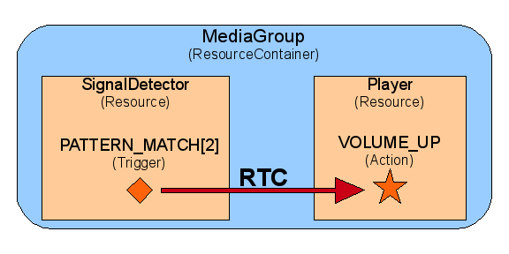

javax.media.mscontrol.resource.RTC
javax.media.mscontrol.resource.RTC
|
||||||||||
| PREV CLASS NEXT CLASS | FRAMES NO FRAMES | |||||||||
| SUMMARY: NESTED | FIELD | CONSTR | METHOD | DETAIL: FIELD | CONSTR | METHOD | |||||||||
java.lang.Object
public class RTC
An RTC (Run Time Control) object associates a Trigger condition
with some Action.
When the Resource identified by the Trigger has the condition satisfied,
the action command is sent to the Resource identified by the Action.
An RTC operates in the scope of a ResourceContainer: it can link any Trigger of any Resource (embedded in the container) to any Action of any Resource.
The available Triggers and Actions are defined by the Resource interfaces.
For example:
RTC volumeUp = new RTC(SignalDetector.PATTERN_MATCH[2], Player.VOLUME_UP);
myMediaGroup.play(..., new RTC[]{volumeUp}, ...);

In this case, when the SignalDetector
matches Pattern 2, the Player receives the
Player.VOLUME_UP command.
RTC objects typically appear in media operations
as an RTC[] rtcs argument, like in Player.play(java.net.URI, RTC[], Parameters).
As a rule an RTC (or set of RTCs) has always the same lifetime as the resource operation that installed it inside the ResourceContainer (e.g. Player.play(..,RTCs,..)). It is enabled upon the start of the operation and disabled once the operation completes, i.e. after reception of a completion event. This is the case for instance when the operation completes successfully or in error (event or exception), including when a RTC triggers completion of this operation. Note, in the latter case, that the RTC that triggers completion of one operation might have been installed by another operation on another resource of this container. Only the RTCs that were installed by the operation that completes will be disabled.
As long as a RTC is not disabled, it will be triggered each time the Trigger condition is detected inside the container. For example, this is useful when installing a RTC during a Play() that triggers action on any signal detection in order to perform pause / resume at any time while the Play() is performing.
A specific Resource Action can be triggered outside the scope of an operation
by invoking ResourceContainer.triggerAction(Action).
Refer to more specific information about using RTCs in each specific Resource
that supports operations with RTCs arguments, such as:
play,
receiveSignals,
record.
| Field Summary | |
|---|---|
static RTC[] |
NO_RTC
A typed constant to use when no RTC is required: myMediaGroup.play("my_file.wav, RTC.NO_RTC, myParameters); |
| Constructor Summary | |
|---|---|
RTC(Trigger trigger,
Action action)
Create an RTC object linking the Trigger
condition to the Action command. |
|
| Method Summary | |
|---|---|
Action |
getAction()
Return the Action that defines action for this RTC. |
Trigger |
getTrigger()
Return the Trigger that defines the trigger condition for this RTC. |
| Methods inherited from class java.lang.Object |
|---|
equals, getClass, hashCode, notify, notifyAll, toString, wait, wait, wait |
| Field Detail |
|---|
public static final RTC[] NO_RTC
| Constructor Detail |
|---|
public RTC(Trigger trigger,
Action action)
Trigger
condition to the Action command.
| Method Detail |
|---|
public Trigger getTrigger()
public Action getAction()
|
||||||||||
| PREV CLASS NEXT CLASS | FRAMES NO FRAMES | |||||||||
| SUMMARY: NESTED | FIELD | CONSTR | METHOD | DETAIL: FIELD | CONSTR | METHOD | |||||||||